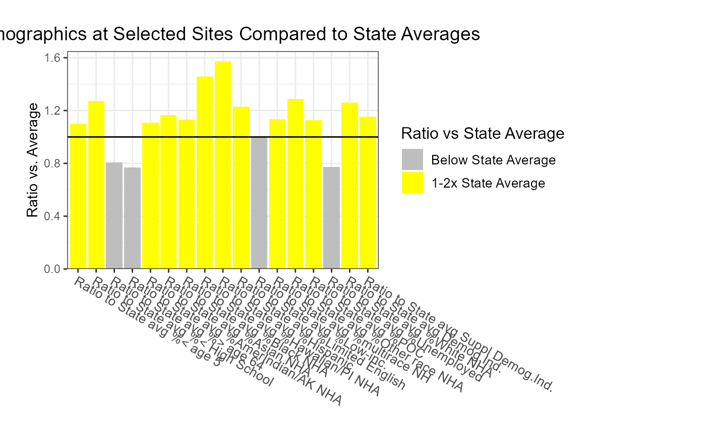

This article provides examples of how to use EJAM in RStudio, especially how to use more specialized functions to find specific places to analyze, such as EPA-regulated facilities defined in various ways, and how to explore the results in more detail than the web app can provide.
Running a Basic Analysis
run_app()launches the web app locally (to run in RStudio on a single computer rather than on a server)ejamit()provides most results in just one function (if you already have a list of places to analyze), as shown in the Quick Start Guide
Tools for Exploring Results
For a standard analysis, the basic tools like
ejam2report(), ejam2excel(),
ejam2map(), etc. let you explore results, as shown in the
Quick
Start Guide.
If you want more ways to visualize and dig into results, examples are provided below in the sections on EXPLORING RESULTS and VISUALIZATION OF FINDINGS (PLOTS). For example, you can check which groups or which facilities have notable findings.
Tools for Selecting Locations to Analyze
EJAM offers a variety of ways to specify the places to be analyzed and compared. The web app helps you select locations in several ways.
If you are working in RStudio, and you already have identified the points or areas to analyze, the [ejamit()] function will accept 1) point coordinates, 2) a shapefile, or 3) a list of FIPS codes.
However, if you first need to get the points (lat, lon values), or you need a more in-depth, custom approach to finding facilities or Census places to analyze, there are several groups of functions to help with that, as shown in all the examples below. They are also shown in the EJAM package reference manual, by category.
You can specify locations for analysis in a variety of ways:
-
Near each point: Specify points and analyze
residents who are NEAR
EACH POINT (PROXIMITY ANALYSIS)
- [Latitude and Longitude]
- [Facilities by ID] can be defined by Facility, using EPA Registry ID or by Facility, using EPA Program System ID
- [Facilities by Type] can be defined by Industry (NAICS) or Facilities by Type or by Clean Air Act source category defined by by MACT Subpart (hazardous air pollutant source category)
-
Within each polygon: Specify areas of any size and
shape to analyze residents within each polygon/zone/area (based on
shapefiles or Census FIPS codes)
- within areas or zones on a map if you have GIS data in SHAPEFILES - Polygons (from shapefiles) could for example define redlining zones, higher risk areas based on modeling, etc.
- within Census units like cities or Counties defined using FIPS CODES - Census Units such as Counties or other types of Census Units are defined by FIPS code (e.g., Counties in one State).
NEAR EACH POINT (PROXIMITY ANALYSIS)
Latitude and Longitude
You can define locations as all residents within X miles of any one or more of the specified points, and you can define those points in a few ways. One way is to upload a table of coordinates – latitude and longitude for each point, one row per site, with columns called lat and lon (or some synonyms that work). There are also more detailed functions for working with latlon coordinates.
The simplest way to do that in the RStudio console is something like
x <- ejamit(), which prompts you to upload a spreadsheet
with lat lon columns, and asks you for the radius.
As explained below, you can get the latitudes and longitudes of
EPA-regulated facilities if you want to specify a set of facilities by
uploading their Registry ID numbers in a table, or using other
identifiers. For example, there is a function
latlon_from_programid() in the examples below.
You can also get coordinates in a few other ways, such as by NAICS (or SIC) industry names or codes, EPA program covering the set of facilities (e.g., all greenhouse gas reporters), or a Clean Air Act MACT subpart.
Facilities by ID
EPA-regulated facilities can be found in the Facility Registry Services by identification number.
by Facility, using EPA Registry ID
# note frs_from_regid() and latlon_from_regid() require the frs dataset, which they try to load on demand.
frs_from_regid(c(110071293460, 110000333826))
## interactively upload file with table of REGISTRY_ID values
x <- latlon_from_regid(read_csv_or_xl()$REGISTRY_ID)
## and run through EJAM
y <- ejamit(latlon_from_regid(read_csv_or_xl()$REGISTRY_ID), radius = 1)
# # still debugging Island Areas validation here!by Facility, using EPA Program System ID
# latlon_from_programid() requires access to the frs_by_programid dataset, which it tries to load on demand.
if (exists("frs_by_programid")) {
latlon_from_programid(c("XJW000012435", "00768SRTRSROAD1"))
}Facilities by Type
by Industry (NAICS)
You can specify sites by NAICS, but it is important to note the FRS lacks NAICS info for many regulated facilities!
naics_from_any("paint and coating", children = T)
#> code n2 n3 n4 n5 n6 name
#> <num> <char> <char> <char> <char> <char> <char>
#> 1: 32551 32 325 3255 32551 32551 Paint and Coating Manufacturing
#> 2: 325510 32 325 3255 32551 325510 Paint and Coating Manufacturing
#> 3: 325510 32 325 3255 32551 325510 Paint and Coating Manufacturing
#> num_name
#> <char>
#> 1: 32551 - Paint and Coating Manufacturing
#> 2: 325510 - Paint and Coating Manufacturing
#> 3: 325510 - Paint and Coating Manufacturing
## note latlon_from_naics() requires the frs_by_naics dataset, which it tries to load on demand.
# head(latlon_from_naics(325510))
# has about 1,000 facilities
#
# All sectors with this phrase in their NAICS title
#
# x <- ejamit(frs_from_naics("paint and coating"), 1)}See many more examples of Working with NAICS Codes (Industry Codes), in a section below.
by EPA Regulatory Program
# note latlon_from_programid() requires the frs and frs_by_programid datasets, which it tries to load on demand.
if (exists("frs_by_programid") && exists("frs")) {
## Map of over 10,000 facilities in FRS identified as in the E-Grid power plant database
pts <- latlon_from_program("EGRID")[, 1:4]
mapfast(pts)
## In just 1 State
pts[, ST := state_from_latlon(lat = lat, lon = lon)$ST]
mapfast(pts[ST == "TX", ], radius = 1)
## Largest lists
epa_programs_counts <- frs_by_programid[, .N, by = "program"][order(N), ]
epa_programs_counts[order(-N), ][1:25, ]
}by MACT Subpart (hazardous air pollutant source category)
# note latlon_from_mactsubpart() requires the frs_by_mact dataset, which it tries to load on demand
if (exists("frs_by_mact")) {
# Search by name of category
mact_table[grepl("ethylene", mact_table$title, ignore.case = T), ]
eto <- rbind(
latlon_from_mactsubpart("O" ),
latlon_from_mactsubpart("WWWWW")
)
# Map the category
mapfast(eto)
# Browse the full list of categories
# mact_table[ , c("N", "subpart", "title")]
# The 10 largest categories
tail(mact_table[order(mact_table$N), c("N", "subpart", "title")], 10)
# Many facilities lack latitude longitude information in this database
nrow(latlon_from_mactsubpart("A", include_if_no_latlon = TRUE))
nrow(latlon_from_mactsubpart("A", include_if_no_latlon = FALSE))
head(latlon_from_mactsubpart("OOOO"), 2)
}Working with NAICS Codes (Industry Codes)
NAICS Codes to Map or Analyze Facilities in one Industrial Sector
Overview of NAICS / industry categories, at n-digit level
# see NAICS categories at the top (2-digit) level
naics_categories()
# see NAICS categories at the 3-digit level
# sorted alphabetical
naics_from_any(naics_categories(3))[order(name),.(name,code)][1:10,]
# sorted by code
naics_from_any(naics_categories(3))[order(code),.(code,name)][1:10,]Find NAICS codes, from the name of an industry
naics_from_any('paint')Find industry names, from the NAICS codes
# get name from one code
naics_from_code(336)$name
# get the name from each code
naics_from_code(mycode)$nameCount facilities by NAICS code
mycode = c(33611, 336111, 336112)
# see counts of facilities by code (parent) and subcategories (children)
naics_counts[NAICS %in% mycode, ]
# see parent codes that contain each code
naicstable[code %in% mycode, ]Find facilities, by name of industry
# See a data table of facilities in one industry
dataload_from_pins("frs")
#> Connecting to Posit Connect ??? at
#> <https://rstudio-connect.dmap-stage.aws.epa.gov>
#> Failed trying to connect to pins board server.
#>
#> frs - is NOT in memory. Checking local disk... frs is NOT found locally on disk at ~/../Downloads/EJAMbigfiles/frs.arrow
#> frs - is NOT in local folder.
#> and could NOT download frs - cannot connect to https://rstudio-connect.dmap-stage.aws.epa.gov/
#> Error : Invalid: Not a Feather V1 or Arrow IPC file
#> Error trying to download frs from public pins board via dataload_from_urlpins()
#> and could NOT download frs from public pins board via ejscreendata pkgdown site
#>
#> frs is NOT found locally on disk at ~/../Downloads/EJAMbigfiles/frs.arrow
#> trying to load frs from EJAM/frs.rda
#> Client error: (404) Not Found
#>
#> and could NOT download frs from DMAP AWS data commons
#> NULL
if (exists("frs")) {
industryword <- "pulp"
head( frs_from_naics(naics_from_any(industryword)$code)[,1:4] )
}Quick map of EPA-regulated facilities in one industrial category, which you can click on to see popup windows about sites.
# note frs_from_naics() requires the frs dataset, which it tries to load on demand.
dataload_from_pins("frs")
#> Connecting to Posit Connect ??? at
#> <https://rstudio-connect.dmap-stage.aws.epa.gov>
#> Failed trying to connect to pins board server.
#>
#> frs - is NOT in memory. Checking local disk... frs is NOT found locally on disk at ~/../Downloads/EJAMbigfiles/frs.arrow
#> frs - is NOT in local folder.
#> and could NOT download frs - cannot connect to https://rstudio-connect.dmap-stage.aws.epa.gov/
#> Error : Invalid: Not a Feather V1 or Arrow IPC file
#> Error trying to download frs from public pins board via dataload_from_urlpins()
#> and could NOT download frs from public pins board via ejscreendata pkgdown site
#>
#> frs is NOT found locally on disk at ~/../Downloads/EJAMbigfiles/frs.arrow
#> trying to load frs from EJAM/frs.rda
#> Client error: (404) Not Found
#>
#> and could NOT download frs from DMAP AWS data commons
#> NULL
if (exists("frs")) {
mapfast(frs_from_naics("smelt")) # may be slow the 1st time, if it loads frs dataset
}(but note that this FRS dataset lacks NAICS for most facilities!)
Table of facilities in an industry, plus links to each facility in ECHO and EJScreen
industryword <- "chemical manuf"
# industryword <- "smelt"
if (exists("frs")) {
mysites <- frs_from_naics(industryword, children = FALSE)[,1:5]
regids <- mysites$REGISTRY_ID
link1 <- url_echo_facility_webpage(regids, as_html = T)
link2 <- url_ejscreen_report(lat = mysites$lat, lon = mysites$lon, radius = 3, as_html = T)
link3 <- url_ejscreenmap(lat = mysites$lat, lon = mysites$lon, as_html = T)
# # same:
# my_industry <- naics_from_any("chemical manuf",children = F)[,.(code,name)]
# mysites <- frs_from_naics(my_industry$code)[,1:5]
mysites <- cbind(`ECHO report` = link1,
`EJScreen Report` = link2, `EJScreen Map` = link3,
mysites)
caption = paste0(nrow(mysites), ' sites have NAICS matching "', industryword, '"')
if (nrow(mysites) > 1500) {mysites <- mysites[1:1500, ]} # >2k rows is too much for client-side DataTables
cat(caption,'\n')
print(
DT::datatable(
mysites[1:5, ],
escape = FALSE, rownames = FALSE,
caption = caption,
filter = "top"
)
)
}Map of facilities in an industry, plus popups with links to each facility in ECHO and EJScreen
mapfast(mysites)Facilities searches using industry codes or text in industry names
naics_from_any("plastics and rubber")
#> code n2 n3 n4 n5 n6
#> <num> <char> <char> <char> <char> <char>
#> 1: 326 32 326 326 326 326
#> name
#> <char>
#> 1: Plastics and Rubber Products Manufacturing
#> num_name
#> <char>
#> 1: 326 - Plastics and Rubber Products Manufacturing
naics_from_any(326)
#> code n2 n3 n4 n5 n6
#> <num> <char> <char> <char> <char> <char>
#> 1: 326 32 326 326 326 326
#> name
#> <char>
#> 1: Plastics and Rubber Products Manufacturing
#> num_name
#> <char>
#> 1: 326 - Plastics and Rubber Products Manufacturing
head(naics_from_any(326, children = T)[,.(code,name)])
#> code
#> <num>
#> 1: 326
#> 2: 3261
#> 3: 32611
#> 4: 326111
#> 5: 326112
#> 6: 326113
#> name
#> <char>
#> 1: Plastics and Rubber Products Manufacturing
#> 2: Plastics Product Manufacturing
#> 3: Plastics Packaging Materials and Unlaminated Film and Sheet Manufacturing
#> 4: Plastics Bag and Pouch Manufacturing
#> 5: Plastics Packaging Film and Sheet (including Laminated) Manufacturing
#> 6: Unlaminated Plastics Film and Sheet (except Packaging) Manufacturing
naics_from_any("pig")
#> code n2 n3 n4 n5 n6
#> <num> <char> <char> <char> <char> <char>
#> 1: 1122 11 112 1122 1122 1122
#> 2: 11221 11 112 1122 11221 11221
#> 3: 112210 11 112 1122 11221 112210
#> 4: 32513 32 325 3251 32513 32513
#> 5: 325130 32 325 3251 32513 325130
#> name
#> <char>
#> 1: Hog and Pig Farming
#> 2: Hog and Pig Farming
#> 3: Hog and Pig Farming
#> 4: Synthetic Dye and Pigment Manufacturing
#> 5: Synthetic Dye and Pigment Manufacturing
#> num_name
#> <char>
#> 1: 1122 - Hog and Pig Farming
#> 2: 11221 - Hog and Pig Farming
#> 3: 112210 - Hog and Pig Farming
#> 4: 32513 - Synthetic Dye and Pigment Manufacturing
#> 5: 325130 - Synthetic Dye and Pigment Manufacturing
naics_from_any("pig ") # space after g
#> code n2 n3 n4 n5 n6 name
#> <num> <char> <char> <char> <char> <char> <char>
#> 1: 1122 11 112 1122 1122 1122 Hog and Pig Farming
#> 2: 11221 11 112 1122 11221 11221 Hog and Pig Farming
#> 3: 112210 11 112 1122 11221 112210 Hog and Pig Farming
#> num_name
#> <char>
#> 1: 1122 - Hog and Pig Farming
#> 2: 11221 - Hog and Pig Farming
#> 3: 112210 - Hog and Pig Farming
# a OR b, a AND b, etc.
a = naics_from_any("plastics")
b = naics_from_any("rubber")
library(data.table)
data.table::fintersect(a,b)[,.(name,code)] # a AND b
#> name code
#> <char> <num>
#> 1: Plastics and Rubber Products Manufacturing 326
#> 2: Rubber and Plastics Hoses and Belting Manufacturing 32622
#> 3: Rubber and Plastics Hoses and Belting Manufacturing 326220
head(data.table::funion(a,b)[,.(name,code)]) # a OR b
#> name
#> <char>
#> 1: Plastics Material and Resin Manufacturing
#> 2: Plastics and Rubber Products Manufacturing
#> 3: Plastics Product Manufacturing
#> 4: Plastics Packaging Materials and Unlaminated Film and Sheet Manufacturing
#> 5: Plastics Bag and Pouch Manufacturing
#> 6: Plastics Packaging Film and Sheet (including Laminated) Manufacturing
#> code
#> <num>
#> 1: 325211
#> 2: 326
#> 3: 3261
#> 4: 32611
#> 5: 326111
#> 6: 326112
# naics_subcodes_from_code(funion(a,b)[,code])[,.(name,code)] # plus children
head(naics_from_any(funion(a,b)[,code], children = T)[,.(name,code)] ) # same
#> name
#> <char>
#> 1: Plastics and Rubber Products Manufacturing
#> 2: Plastics Product Manufacturing
#> 3: Plastics Packaging Materials and Unlaminated Film and Sheet Manufacturing
#> 4: Plastics Bag and Pouch Manufacturing
#> 5: Plastics Packaging Film and Sheet (including Laminated) Manufacturing
#> 6: Unlaminated Plastics Film and Sheet (except Packaging) Manufacturing
#> code
#> <num>
#> 1: 326
#> 2: 3261
#> 3: 32611
#> 4: 326111
#> 5: 326112
#> 6: 326113A NAICS code can have many “children” or subcategories under it
dataload_from_pins("frs", "frs_by_naics")
#> Connecting to Posit Connect ??? at
#> <https://rstudio-connect.dmap-stage.aws.epa.gov>
#> Failed trying to connect to pins board server.
#>
#> frs - is NOT in memory. Checking local disk... frs is NOT found locally on disk at ~/../Downloads/EJAMbigfiles/frs.arrow
#> frs - is NOT in local folder.
#> and could NOT download frs - cannot connect to https://rstudio-connect.dmap-stage.aws.epa.gov/
#> Error : Invalid: Not a Feather V1 or Arrow IPC file
#> Error trying to download frs from public pins board via dataload_from_urlpins()
#> and could NOT download frs from public pins board via ejscreendata pkgdown site
#>
#> frs is NOT found locally on disk at ~/../Downloads/EJAMbigfiles/frs.arrow
#> trying to load frs from EJAM/frs.rda
#> Client error: (404) Not Found
#>
#> and could NOT download frs from DMAP AWS data commons
#> NULL
if (exists("frs") & exists("frs_from_naics")) {
NROW(naics_from_any("chem"))
# about 20
NROW(naics_from_any("chem", children = T))
# >100
NROW(frs_from_naics(naics_from_any("chem")$code))
# a few thousand
NROW(frs_from_naics(naics_from_any("chem", children = T)$code))
# >10,000
}SHAPEFILES
Polygons in shapefiles as the places to compare
You can upload polygons in a shapefile, and use EJAM to analyze them. See the Shiny app.
See shapefile_from_any() and related functions:
shapefile_from_any()
shapefile_from_sitepoints()
shape_buffered_from_shapefile()
shape_buffered_from_shapefile_points()
shp1 <- shapefile_from_gdbzip(system.file("testdata/shapes/portland.gdb.zip", package = "EJAM"))FIPS CODES
Counties as the places to compare
You can compare places defined by FIPS code, such as a group of US Counties.
Compare all Counties in a State, using EJAM indicators
# Get FIPS of each county in Delaware
mystate <- "Delaware"
cfips <- fips_counties_from_statename(mystate)
## You could launch a web browser tab for each of the counties,
## to see each of the County reports from EJScreen, like this:
#
# sapply(url_ejscreen_report(areaid = cfips), browseURL)
## Analyze EJ stats for each county in the State
x <- ejamit(fips = cfips) # radius not used
DT::datatable(x$results_bysite, escape = F)
ejam2table_tall(x)
t(x$results_bysite[ , c(
'ejam_uniq_id', 'pop', names_d_subgroups_ratio_to_state_avg), with = F])
mapfastej_counties(x$results_bysite)
cnames <- fips2countyname(x$results_bysite$ejam_uniq_id)
#cnames <- c("Kent County", "New Castle County", "Sussex County")
#cnames <- gsub(" County", "", cnames)
barplot(x$results_bysite$pctlowinc, names.arg = cnames,
main = paste0('% Low Income by County in ', mystate))
# Another example
mystate <- "Maryland"
vname <- "% low income"
xmd <- ejamit(fips = fips_counties_from_statename(mystate))
ggblanket::gg_col(data = xmd$results_bysite,
y = pctlowinc,
x = ejam_uniq_id,
title = paste0(vname, ' by County in ', mystate),
y_title = vname
)
mapfastej_counties(xmd$results_bysite, 'state.pctile.pctlowinc')EXPLORING RESULTS
The most striking findings (e.g., which group is most overrepresented?)
See examples above using ejam2report() but also you can check some key findings like this:
x <- testoutput_ejamit_1000pts_1miles
out <- x$results_bysite
out <- setDF(copy(out))
ratio_benchmarks <- c(1.01, 1.50, 2, 3, 5, 10)
ratiodata <- out[, names_d_ratio_to_state_avg]
findings <- count_sites_with_n_high_scores(ratiodata, quiet = TRUE) # long output to console !
tail(findings$text[findings$text != ""], 1) # the most extreme finding!
#> [1] "At at least 3% of these sites, 1 of the indicators is 5 times the average "More summary findings
dimnames(findings)
#> NULL
findings$text[2]
#> [1] "At at least 93% of these sites, 1 of the indicators is 1.01 times the average "
head(findings$stats[ , , 1], 15)
#> cut
#> count 1.01 2 5 10
#> 0 67 709 974 997
#> 1 189 165 26 3
#> 2 171 52 0 0
#> 3 117 36 0 0
#> 4 92 19 0 0
#> 5 91 11 0 0
#> 6 73 5 0 0
#> 7 90 3 0 0
#> 8 106 0 0 0
#> 9 4 0 0 0
head(findings$stats[ , 1, ], 21)
#> stat
#> count count cum pct cum_pct
#> 0 67 1000 7 100
#> 1 189 933 19 93
#> 2 171 744 17 74
#> 3 117 573 12 57
#> 4 92 456 9 46
#> 5 91 364 9 36
#> 6 73 273 7 27
#> 7 90 200 9 20
#> 8 106 110 11 11
#> 9 4 4 0 0
x = findings$stats[ , 1, ]
x[x[, "cum_pct"] >= 50 & x[, "cum_pct"] <= 80, ]
#> stat
#> count count cum pct cum_pct
#> 2 171 744 17 74
#> 3 117 573 12 57
findings$stats[ 1, , ]
#> stat
#> cut count cum pct cum_pct
#> 1.01 67 1000 7 100
#> 2 709 1000 71 100
#> 5 974 1000 97 100
#> 10 997 1000 100 100Site by site detailed results in datatable format in RStudio viewer:
out2 <- testoutput_ejamit_100pts_1miles
DT::datatable(out2$results_bysite[1:5, ], escape = FALSE, rownames = FALSE)
# To see all 1,000 sites in table:
#DT::datatable(out2$results_bysite[1:1000, ], escape = FALSE, rownames = FALSE)Overall results for a few key indicators, as raw output in console:
out2 <- testoutput_ejamit_100pts_1miles
names(out2)
#> [1] "results_overall" "results_bysite"
#> [3] "results_bybg_people" "longnames"
#> [5] "count_of_blocks_near_multiple_sites" "results_summarized"
#> [7] "formatted" "sitetype"
cbind(overall = as.list( out2$results_overall[ , ..names_d]))
#> overall
#> Demog.Index 1.640289
#> Demog.Index.Supp 1.631243
#> pctlowinc 0.3199508
#> pctlingiso 0.07993421
#> pctunemployed 0.06199302
#> pctlths 0.1343483
#> pctunder5 0.05552895
#> pctover64 0.1447244
#> pctmin 0.5595154
cbind(overall = as.list( out2$results_overall[ , ..names_d_subgroups]))
#> overall
#> pcthisp 0.2788923
#> pctnhba 0.1472757
#> pctnhaa 0.0873758
#> pctnhaiana 0.002454578
#> pctnhnhpia 0.001571147
#> pctnhotheralone 0.005819709
#> pctnhmulti 0.03612613
#> pctnhwa 0.4404846Overall results for the very long list of all indicators, as raw output in console:
out2 <- testoutput_ejamit_100pts_1miles
head(
ejam2table_tall(out2)
, 20)
# head(
# cbind(as.list(out2$results_overall))
# , 12)Just one site, all the indicators
head(
ejam2table_tall(out2, sitenumber = 1)
, 20)See indicators aggregated over all people across all sites
## view output of batch run aggregation ####
out <- testoutput_ejamit_1000pts_1miles
head(cbind(overall = as.list( out$results_overall)))
#> overall
#> EJScreen Report NA
#> EJScreen Map NA
#> ECHO report NA
#> ejam_uniq_id NA
#> valid TRUE
#> invalid_msg ""
## To see just some subset of indicators, like Environmental only:
cbind(overall = as.list( out$results_overall[ , ..names_e])); cat("\n")
#> overall
#> pm 9.4237
#> o3 65.9796
#> no2 11.08754
#> dpm 0.3321597
#> rsei 4227.326
#> traffic.score 4083324
#> pctpre1960 0.4255891
#> proximity.npl 1.036089
#> proximity.rmp 0.7589651
#> proximity.tsdf 10.38343
#> ust 8.573221
#> proximity.npdes 50125.2
#> drinking NA
cbind(overall = as.list( out$results_overall[ , ..names_d])); cat("\n")
#> overall
#> Demog.Index 1.718163
#> Demog.Index.Supp 1.765287
#> pctlowinc 0.3356696
#> pctlingiso 0.09735858
#> pctunemployed 0.06679282
#> pctlths 0.1511022
#> pctunder5 0.05880198
#> pctover64 0.1396016
#> pctmin 0.5856438
cbind(overall = as.list( out$results_overall[ , ..names_d_subgroups])); cat("\n")
#> overall
#> pcthisp 0.3341704
#> pctnhba 0.1156517
#> pctnhaa 0.09142377
#> pctnhaiana 0.002953629
#> pctnhnhpia 0.001746431
#> pctnhotheralone 0.00578322
#> pctnhmulti 0.03391459
#> pctnhwa 0.4143562
cbind(overall = as.list( out$results_overall[ , ..names_e_pctile])); cat("\n")
#> overall
#> pctile.pm 81
#> pctile.o3 74
#> pctile.no2 82
#> pctile.dpm 87
#> pctile.rsei 84
#> pctile.traffic.score 88
#> pctile.pctpre1960 69
#> pctile.proximity.npl 91
#> pctile.proximity.rmp 74
#> pctile.proximity.tsdf 91
#> pctile.ust 87
#> pctile.proximity.npdes 95
#> pctile.drinking NA
cbind(overall = as.list( out$results_overall[ , ..names_d_pctile])); cat("\n")
#> overall
#> pctile.Demog.Index 70
#> pctile.Demog.Index.Supp 63
#> pctile.pctlowinc 61
#> pctile.pctlingiso 85
#> pctile.pctunemployed 69
#> pctile.pctlths 73
#> pctile.pctunder5 61
#> pctile.pctover64 41
#> pctile.pctmin 71
# cbind(overall = as.list( out$results_overall[ , ..names_ej_pctile])); cat("\n")VISUALIZATION OF FINDINGS (PLOTS)
Indicators
Barplot showing which indicator is most elevated overall
out <- testoutput_ejamit_1000pts_1miles
ejam2barplot(out,
varnames = c(names_d_ratio_to_state_avg, names_d_subgroups_ratio_to_state_avg),
main = "Demographics at Selected Sites Compared to State Averages")
Histogram of indicators distribution over all people across all sites
hist(out$results_bysite$pctile.traffic.score, 10, xlab = "Local traffic scores (expressed as a percentile)",
ylab = "count of sites in each bin, out of 1,000 sites", freq = TRUE,
main = "Actual distribution of scores nearby, as percentiles,
vs flat line = USA overall")
abline(h = nrow(out$results_bysite)/10)